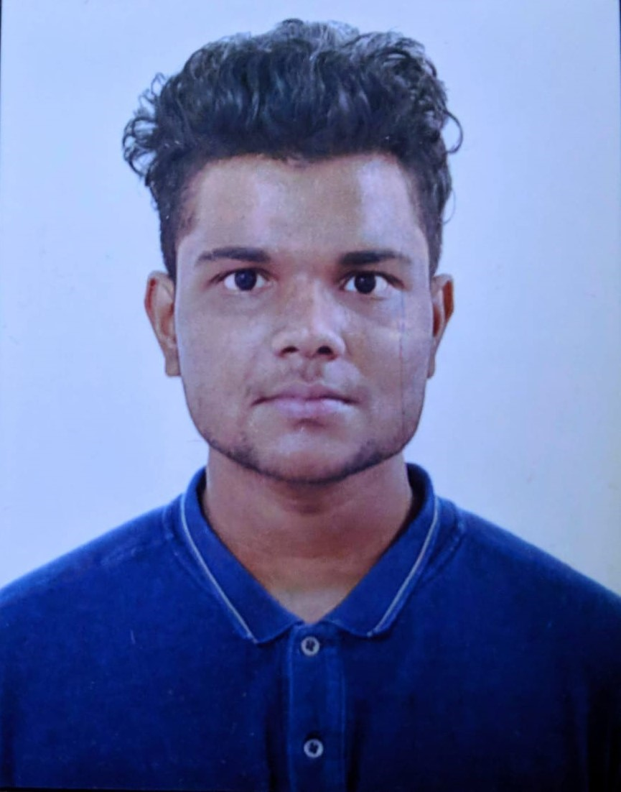

|  |
Rohit Nandakumar Nair
Address: |
| Course | Institution | Marks Obtained | Passed Out Year |
| BE in Electronics and Communication | CMR Institute of Technology | 7.9489 CGPA(Till 6th Sem) | 2022 (Ongoing) |
| 12th Grade (PCMB) | CMR National PU College | 86.5% | 2018 |
| 10th Grade | Sri Chaitanya Techno School | 10/10 CGPA | 2016 |
Programming Languages:
|
Software:
|
Web Technologies:
|